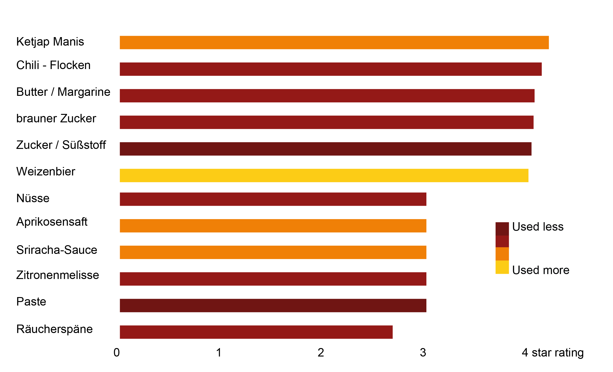

Recipe Data Analysis
What do Germans like to eat?
BY Jan Strozyk
Published July 27, 2018
As a German, I naturally wake up with Sauerkraut, Bratwurst and a Beerstein in my hand - so far for the cliché. But what do German eating habbits really look like? This project tries to shed light on this question by taking a closer a look at Germany's favorite (and least favorite) home cooking recipes.
The data
The information used comes from Chefkoch.de, the largest German-speaking cooking and recipe online portal. I scraped roughly 100.000 recipes from the page, including information on the individual ingredients, the recipe's rating and the amount of votes it got.
Even though Chefkoch.de does have a section where they present professionally edited recipes, I focused on the community sourced dishes, so all information is provided by the users.
This project tries to do more though than rank the top rated recipes: Most of the results presented here are not immediately available from the chefkoch data base, but have been calculated in some way or from form the data base. There is more information on the specifics next to each chart.
The most and least liked ingredients
There is no rating system for individual ingredients.For this chart, I calculated the average for every recipe that uses a particular ingredient - for example, if milk was used in 12.000 recipes, the mean rating for those is the score for milk. This produced some real surprises on both ends. Who would've thought that Germans love their Indonesian Ketjap Manis and are not at all nuts for nuts?
NOTE: Only ingredients that are used in 10 or more recipes were taken into account.
SOURCE: chefkoch.de / Own calculations
Ok, does that mean that we put Ketjap Manis and Chili flakes in everything and we are good? Not really. Obviously not. A statement about German food habit needs to take into account which ingredients are used in a lot of recipes and which are only cooked with in some super-duper rare preparations and rank high for that reason. One could argue that an ingredient that is used often is also liked, because why would you use it all the time if you don't like it?
Ingredients frequency and rating
This chart shows the frequency a certain ingredient is used and its rating. Each dot represents one ingredient. We can see that indeed less frequently used ingredients tend to rank higher - and also lower. Statistically, that makes sense: If an item appears in a lot of recipes, chances are high that the score evens out. There are a few outliers, though!

NOTE: The x-axis uses a logarithmic scale. One increment means 10 times the amount of recipes.
SOURCE: chefkoch.de / Own calculations
It is easy to create a tasty meal with really good ingredients. A good recipe, however, should be one that stands out compared to those that use similar ingredients, right? With a little bit of math, I could use the data to identify those recipes. Each recipe has a set of ingredients, each of which again has a score (as described above). With these, I can calculate the average ingredient score for a recipe. The recipe itself has a score as well, that is usually different from that. The bigger this difference is, the better (or worse) the recipe is. Think of it as a ingredient adjusted recipe score. It shows you which techniques, which ingredient combinations and methods are the best compared to those using a similar set of ingredients.
Recipe ranking - ingredient adjusted
Each line represents one recipe. There are few extreme outliers on the left, apparently it is hard to come up with a good recipe that uses not-so-good ingredients. Most of the top ranking recipes are baked goods - that's were you can do a lot wrong and right. The right side of the chart is fairly stable until the last fifth, were desaster breaks loose. People really upload some bad, bad recipes to the site and it is not appreciated (even though most of them use a lot of fat, salt and sugar.)
NOTE: A step of 1 on the x-axis means that the recipe score is 1 point higher or lower than the average score of its ingredients.
SOURCE: chefkoch.de / Own calculations
A good recipe is one that makes better use of ingredients that another one that uses similar ingredients. Sounds simple. But how many ingredients should you pick for a good meal? Does it help to just through in there whatever's left in the fridge? Or do keep it simple? The data does not give a clear, final answer to this question. Most recipes use between 5 and 15 different ingredients. The next chart, however, shows that there is a slight tendency torwards the more the merrier.
Amount of ingredients and recipe rating
This chart shows the amount of ingredients used in one recipe and the recipe rating. Each dot represents one recipe. The data does not give clear answers for the top, there is a tendency at the lower end of the ranking though: The further on the right a recipe is, the higher it tends to score.

The conclusion
So, what do Germans like to eat? The answer is - as always - not simple. They like Ketjap Manis, they also like sugar and fat. But if you put too much sugar and fat and your preparation instructions are not good, they won't like it either. There is a tendency torwards baking instructions to generally rank higher than cooking instructions. There is also a slight tendency, as shown in the chart before, for recipes that use more ingredients - and are therefore more elaborate - to rank higher.
Ok, but just for the fun of it: here's the perfect German dish. The top 1000 recipes by rating use an average of 10.4 ingredients. We know the top scoring recipes from the calculation above. Let me present to you:
The spicy Ketjap-Sugar-Wheat Beer-More Sugar-Pork Knuckle (with pasta):
- Ketjap Manis
- Chili flakes
- Butter
- brown sugar
- sugar
- pork knuckle
- wheat beer
- baking mal
- pasta
Mix it all together, find the secret preparation method that will make it stand out from all the others - Bon Appetit!